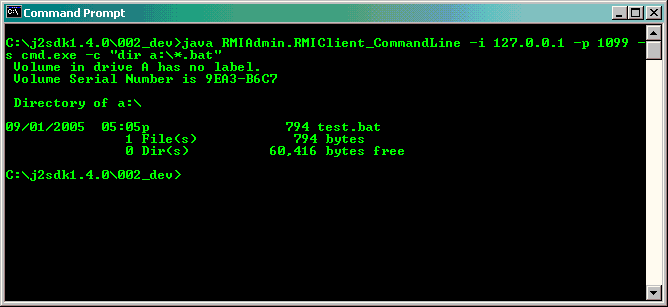

RMIAdmin support command line usage, therefore you may further develop script/batch which invoke
activity such as "Execute Remote Command", as a result to promote automation.
For example, you may wish to execute remote command via Command Prompt (for Windows) or Console
(for Unix-like Computer) rather than using the RMIAdmin GUI. The benefit is that you could then
embed all your instructions into batch (*.bat) or shell script (*sh), and therefore the integration
with other scripting/programming languages is made possible.
Usage instructions
-
java RMIAdmin.RMIAdminClient_CommandLine -h
Display the help menu
-
java RMIAdmin.RMIAdminClient_CommandLine -i ip_address
Specify the "IP Address" of remote RMIServer e.g. "203.186.94.62"
-
java RMIAdmin.RMIAdminClient_CommandLine -p port_no
Specify the "Port Number" of remote RMIServer e.g. "1099"
-
java RMIAdmin.RMIAdminClient_CommandLine -s shell
Specify the "Shell" of remote RMIServer e.g. "cmd.exe or /bin/bash"
-
java RMIAdmin.RMIAdminClient_CommandLine -c "command_and_arguments"
Specify the "Command" to be executed, e.g. "dir c:\ && copy *txt ..\"
Usage examples
java RMIAdmin.RMIAdminClient_CommandLine -i ip_address -p port_no -s shell -c "command"
-
Listing all the batch files in floppy disk on remote server
[Windows]
java RMIAdmin.RMIAdminClient_CommandLine -i 203.186.94.62 -p 1099 -s cmd.exe -c "dir a:\*.bat"

[Linux]
java RMIAdmin.RMIAdminClient_CommandLine -i 203.186.94.61 -p 1099 -s /bin/bash -c "ls -la /"
-
Perform files copy on remote server
[Windows]
java RMIAdmin.RMIAdminClient_CommandLine -i 203.186.94.62 -p 1099 -s cmd.exe -c "copy c:\winnt\system32\drivers\etc\hosts a:\"
[Linux]
java RMIAdmin.RMIAdminClient_CommandLine -i 203.186.94.61 -p 1099 -s /bin/bash -c "cp /etc/hosts /mnt/floppy"
-
Invoke scripts/batch on remote server
[Windows]
java RMIAdmin.RMIAdminClient_CommandLine -i 203.186.94.62 -p 1099 -s cmd.exe -c "c:\testing.bat"
[Linux]
java RMIAdmin.RMIAdminClient_CommandLine -i 203.186.94.61 -p 1099 -s /bin/bash -c "/testing.sh"
Usage Tips
-
Note that the command entered is non-case sensitive for Windows, but
case sensitive for all unix-like system.
-
If the command entered contain double quotes, the \ symbol should be included for the double quotes to
be passed in properly.
[Windows Example]
java RMIAdmin.RMIAdminClient_CommandLine -i 203.186.94.62 -p 1099 -s cmd.exe -c "dir \"c:\program files\""
-
Cross-platform execution is supported, therefore you can perform use command mode on a Linux Machine to
invoke instructions on remote Windows Machine, and vice versa.
-
To run this command successfully, you must include the path (including filename) where
you placed the RMIAdmin program (RMIAdmin.jar) in the system classpath.
[Windows Example]
set CLASSPATH=%CLASSPATH%;fullpath_of_RMIAdmin.jar
e.g. set CLASSPATH=%CLASSPATH%;c:\RMIAdmin\RMIAdmin.jar
* Assume RMIAdmin.jar is installed in C:\RMIAdmin
[Linux Example]
CLASSPATH=$CLASSPATH:fullpath_of_RMIAdmin.jar
e.g. CLASSPATH=$CLASSPATH:/RMIAdmin/RMIAdmin.jar
* Assume RMIAdmin.jar is installed in /RMIAdmin
-
Other than setting the system classpath, you may also use the java -cp parameter to
specify the CLASSPATH at runtime.
[Windows Example]
java -cp fullpath_of_RMIAdmin.jar
e.g. java -cp C:\RMIAdmin\RMIAdmin.jar RMIAdmin.RMIClient_CommandLine -i ......
* Assume RMIAdmin.jar is installed in C:\RMIAdmin
[Linux Example]
java -cp fullpath_of_RMIAdmin.jar
e.g. java -cp /RMIAdmin/RMIAdmin.jar RMIAdmin.RMIClient_CommandLine -i ......
* Assume RMIAdmin.jar is installed in /RMIAdmin
Related Topics:
|